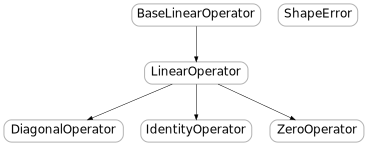
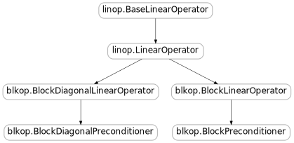

When working towards a solution of a linear system \(Ax=b\), Krylov methods do not need to know anything structural about the matrix \(A\); all they require is the ability to form matrix-vector products \(v \mapsto Av\) and, possibly, products with the transpose \(u \mapsto A^T u\). In essence, we do not even need the operator \(A\) to be represented by a matrix at all; we simply consider it as a linear function.
In PyKrylov, such linear functions can be conveniently packaged as LinearOperator objects. If A is an instance of LinearOperator and represents the “matrix” \(A\) above, we may computes matrix-vector products by simply writing A*v, where v is a Numpy array of appropriate size.
Similarly, if a Krylov method requires access to the transpose operator \(A^T\), it is conveniently available as A.T and products may be computed using, e.g., A.T * u. If A represents a symmetric operator \(A = A^T\), then A.T is simply a reference to A itself.
More generally, since \((A^T)^T = A\), the Python statement A.T.T is A always evaluates to True, which means that they are the same object.
For complex systems, the operator API also gives access to A.H. The result is a linear operator such that A.H * y is the product of the conjugate transpose of A with y, i.e., \(A^H y\). If A.hermitian is True, then A.H and A are the same object.
It is important to note that for complex operators, A.T and A.H are typically different operators. Users can provide a function or a method to compute the product with the transpose and well as a function or method to compute products with the conjugate transpose. However, if the product with the transpose is defined, the product with the conjugate transpose may be inferred automatically, and the linop module tries to infer what it can. Any operator A possesses a conjugate method, which returns the operator B such that B * x == (A * x.conjugate()).conjugate(), and A.H is the same as B.T. An alias for the conjugate of A is A.bar, which is reminiscent of the notation \(\bar{A}\) for the conjugate of \(A\).
In the next two sections, we describe generic linear operators and linear operators constructed by blocks.

All linear operators derive from the base class BaseLinearOperator. This base class is not meant to be used directly to define linear operators, other than by subclassing to define classes of more specific linear operators.
Bases: object
A linear operator is a linear mapping x -> A(x) such that the size of the input vector x is nargin and the size of the output is nargout. It can be visualized as a matrix of shape (nargout, nargin). Its type is any valid Numpy dtype. By default, it has dtype numpy.float but this can be changed to, e.g., numpy.complex via the dtype keyword argument and attribute.
A logger may be attached to the linear operator via the logger keyword argument.
The data type of the operator.
Indicates whether the operator is Hermitian.
The number of products with vectors computed so far.
The size of an input vector.
The size of an output vector.
Reset operator/vector product counter to zero.
The shape of the operator.
Indicates whether the operator is symmetric.
It is intuitive to define an operator by its action on vectors. The LinearOperator class takes arguments matvec and matvec_transp to define the action of the operator and of its transpose.
Here is a simple example:
import numpy as np
A = LinearOperator(nargin=3, nargout=3, matvec=lambda v: 2*v, symmetric=True)
B = LinearOperator(nargin=4, nargout=3, matvec=lambda v: np.arange(3)*v[:3],
matvec_transp=lambda v: np.concatenate((np.arange(3)*v, np.zeros(1))))
Here, A represents the operator \(2I\), where \(I\) is the identity and B could be represented by the matrix
Note that any callable object can be used to pass values for matvec and matvec_transp. For example :
def func(v):
return np.arange(3) * v
class MyClass(object):
def __call__(self, u):
return np.concatenate((np.arange(3)*v, np.zeros(1)))
myobject = MyClass()
B = LinearOperator(nargin=4, nargout=3, matvec=func, matvec_transp=myobject)
is perfectly valid. Based on this example, arbitrarily complex operators may be built.
Bases: linop.BaseLinearOperator
A linear operator constructed from a matvec and (possibly) a matvec_transp function. If symmetric is True, matvec_transp is ignored. All other keyword arguments are passed directly to the superclass.
The adjoint operator.
The transpose operator.
The complex conjugate operator.
Return the complex conjugate operator.
The data type of the operator.
Convert operator to a dense matrix. This is the same as to_array.
Indicates whether the operator is Hermitian.
The number of products with vectors computed so far.
The size of an input vector.
The size of an output vector.
Reset operator/vector product counter to zero.
Product with the conjugate transpose. This method is included for compatibility with Scipy only. Please use the H attribute instead.
The shape of the operator.
Indicates whether the operator is symmetric.
Convert operator to a dense matrix. This is the same as full.
A few common operators are predefined, such as the identity, the zero operator, and a class for diagonal operators.
Bases: linop.LinearOperator
A linear operator representing the identity operator of size nargin.
Bases: linop.LinearOperator
The zero linear operator of shape nargout-by-nargin.
Diagonal operators are simply defined by their diagonal as a Numpy array. For example:
d = np.random.random(10)
D = DiagonalOperator(d)
Bases: linop.LinearOperator
A diagonal linear operator defined by its diagonal diag (a Numpy array.) The type must be specified in the diag argument, e.g., np.ones(5, dtype=np.complex) or np.ones(5).astype(np.complex).
Typically, linear operators don’t come alone and an operator is often used to define other operators. An example is reduction. Suppose \(A\) is a linear operator from \(\mathbb{R}^n\) into \(\mathbb{R^m}\), \(\mathcal{Z}\) is a subspace of \(\mathbb{R}^n\) and \(\mathcal{Y}\) is a subspace of \(\mathbb{R}^m\). Sometimes it is useful to consider \(A\) restricted to \(\mathcal{Z}\) and co-restricted to \(\mathcal{Y}\). Assuming that \(A\) is a matrix representing the linear operator and \(Z\) and \(Y\) are matrices whose columns form bases of the subspaces \(\mathcal{Z}\) and \(\mathcal{Y}\), respectively, then the restricted operator may be written \(Y^T A Z\).
A simple version of this type of reduction is where we only consider a subset of the rows and columns of the matrix \(A\), which corresponds to subspaces \(\mathcal{Z}\) and \(\mathcal{Y}\) aligned with the axes of coordinates.
Note that by default, the reduced linear operator is considered to be non-symmetric even if the original operator was symmetric.
Reduce a linear operator by limiting its input to col_indices and its output to row_indices.
A special case of this type of reduction is when row_indices and col_indices are the same. This is often useful in combination with square symmetric operators. In this case, the reduced operator possesses the same symmetry as the original operator.
Reduce a linear operator symmetrically by reducing boths its input and output to indices.
An obvious use case of linear operators is matrices themselves! The following convenience functions build linear operators from Pysparse sparse matrices and from Numpy arrays.
Return a linear operator from a sparse matrix in coordinate format. If nargin or nargout is not specified, it will be inferred from rows and cols. If symmetric is True, then vals, rows and cols are assumed to only represent one triangle of the operator.
Return a linear operator from a Pysparse sparse matrix.
Return a linear operator from a Numpy ndarray.
Note that there is normally no need to build linear operators from Numpy matrices or from Scipy sparse matrices since they already support product and transposition.
Certain operators implement abs(). It is the case of diagonal operators. Note that abs is not implemented by default because it is not intended to represent the “elementwise” absolute value, as Numpy does with matrices. It is intended to represent the operator whose eigenvalues are the absolute values of the original operator. Thus, abs should be implemented on a case-by-case basis, as necessary.
The linop module provides a sqrt() function. This function simply calls the _sqrt() method of the operator passed as argument. If implemented, this method should return the “square root operator”, i.e., sqrt(A) should return an operator B such that B * B is the same operator as A.
Linear operators are sometimes defined by blocks. This is often the case in numerical optimization and the solution of partial-differential equations. An example of operator defined by blocks is
where \(A\), \(B\), \(C\) and \(D\) are linear operators (perhaps themselves defined by blocks) of appropriate shape.
The general class BlockLinearOperator may be used to represent the operator above. If more structure is present, for example if the off-diagonal blocks are zero, \(K\) is a block-diagonal operator and the class BlockDiagonalLinearOperator may be used to define it.

General block operators are defined using a list of lists, each of which defines a block row. If the block operator is specified as symmetric, each block on the diagonal must be symmetric. For example:
1 2 3 4 5 6 7 8 9 10 11 12 13 14 15 16 17 18 19 20 21 22 23 24 25 | A = LinearOperator(nargin=3, nargout=3,
matvec=lambda v: 2*v, symmetric=True)
B = LinearOperator(nargin=4, nargout=3, matvec=lambda v: v[:3],
matvec_transp=lambda v: np.concatenate((v, np.zeros(1))))
C = LinearOperator(nargin=3, nargout=2, matvec=lambda v: v[:2],
matvec_transp=lambda v: np.concatenate((v, np.zeros(1))))
D = LinearOperator(nargin=4, nargout=2, matvec=lambda v: v[:2],
matvec_transp=lambda v: np.concatenate((v, np.zeros(2))))
E = LinearOperator(nargin=4, nargout=4,
matvec=lambda v: -v, symmetric=True)
# Build [A B].
K1 = BlockLinearOperator([[A, B]])
# Build [A B]
# [C D].
K2 = BlockLinearOperator([[A, B], [C, D]])
# Build [A]
# [C].
K3 = BlockLinearOperator([[A], [C]])
# Build [A B]
# [B' E].
K4 = BlockLinearOperator([[A, B], [E]], symmetric=True)
|
Bases: pykrylov.linop.linop.LinearOperator
A linear operator defined by blocks. Each block must be a linear operator.
blocks should be a list of lists describing the blocks row-wise. If there is only one block row, it should be specified as [[b1, b2, ..., bn]], not as [b1, b2, ..., bn].
If the overall linear operator is symmetric, only its upper triangle need be specified, e.g., [[A,B,C], [D,E], [F]], and the blocks on the diagonal must be square and symmetric.
The list of blocks defining the block operator.
Block diagonal operators are a special case of block operators and are defined with a list containing the blocks on the diagonal. If the block operator is specified as symmetric, each block must be symmetric. For example:
K5 = BlockDiagonalLinearOperator([A, E], symmetric=True)
Linear operators, whether defined by blocks or not, may be added together or composed following the usual rules of linear algebra. An operator may be multiplied by a scalar or by another operator. Operators of the same shape may be added or subtracted. Those operations are essentially free in the sense that a new linear operator results of them, which encapsulates the appropriate rules for multiplication by a vector. It is only when the resulting operator is applied to a vector that the appropriate chain of operations is applied. For example:
AB = A * B
AA = A * A.T
G = E + 2 * B.T * B
Block operators also support iteration and indexing. Iterating over a block operator amounts to iterating row-wise over its blocks. Iterating over a block diagonal operator amounts to iterating over its diagonal blocks. Indexing works as expected. Indexing general block operators requires two indices, much as when indexing a matrix, while indexing a block diagonal operator requires a single indices. For example:
1 2 3 4 5 6 7 8 9 10 11 12 13 14 15 16 17 18 19 | K2 = BlockLinearOperator([[A, B], [C, D]])
K2[0,:] # Returns the block operator defined by [[A, B]].
K2[:,1] # Returns the block operator defined by [[C], [D]].
K2[1,1] # Returns the linear operator D.
C.T in K2 # Returns True.
K4 = BlockLinearOperator([[A, B], [E]], symmetric=True)
K4[0,1] # Returns the linear operator B.T.
for block in K4:
print block # Iterates over all blocks (in both triangles).
K5 = BlockDiagonalLinearOperator([A, E, D], symmetric=True)
K5[0] # Returns the linear operator A.
K5[1] # Returns the linear operator B.
K5[1] = E.T # Updates the middle block.
K5[:2] # Returns the diagonal operator defined by [A, E].
D in K5 # Returns True
for block in K5:
print block # Iterates over all diagonal blocks.
|